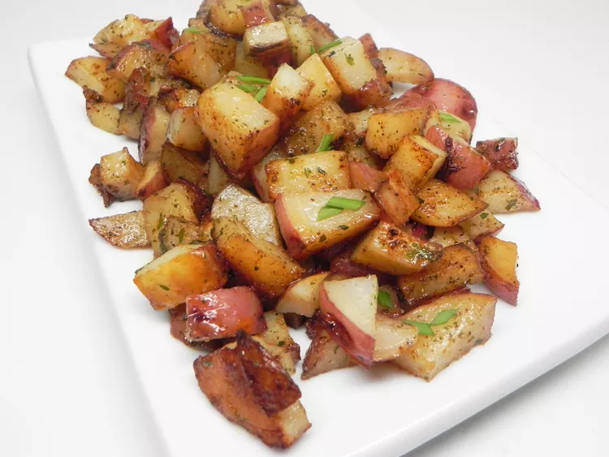

Pan Roasted Red Potatoes

Description
Pan-roasting in duck fat gives these skillet red potatoes a luxurious flavor that can't be added any other way. These potatoes will step up your breakfast game and have everyone begging you to make them again and again! This also makes a wonderful breakfast dish; just serve it alongside some eggs and bacon, and you are all set!
Ingredients
- 1 tablespoon duck fat
- 3 unpeeled red potatoes, diced
- 1 teaspoon dried parsley
- ½ teaspoon salt
- ¼ teaspoon ground white pepper
Steps
- Melt duck fat in a large skillet over medium-high heat until shimmering, about 1 minute. Add potatoes; cook, stirring minimally, until potatoes are golden brown, 5 to 10 minutes. Drain excess fat.
- Combine parsley, salt, and white pepper in a bowl; toss over cooked potatoes to coat evenly.